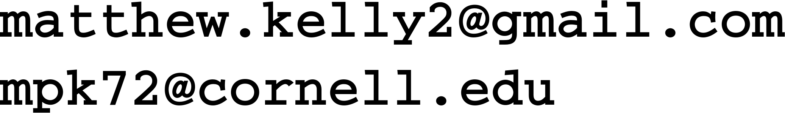

|
Email:Links:
|

Education
Research Interests:
I study algorithms for controlling bipedal locomotion (walking and running). Along the way, I've enjoyed learning about the many tools of the trade: non-linear optimization, rigid-body simulation, and trajectory optimization to name a few.
Graduate degree (PhD), Cornell University, 2011-present
- field: mechanical engineering
- concentration: dynamical systems and control, minor: computer science
- advisor: Andy Ruina
- research: controller design for legged robots
Undergraduate degree (BSME), Tufts University, 2007-2011
- major: mechanical engineering, minor: music
- academic advisor: Chris Rogers
- research advisor: Tom James
- study abroad: New Zealand, University of Canterbury
Personal
I grew up in Stone Ridge NY, a small town just to the Southeast of the Catskill mountains, and have a younger brother and sister. Now I live in a small farm house out in the woods near Ithaca with a few friends. The house is still heated exclusively with a wood stove and we cut and split all of our own wood. We also have a large vegetable garden in the summer and a flock of chickens that we raise for eggs.
When I'm not working on research, I enjoy being outside: hiking, biking, skiing, gardening, and making trails in the woods. On the weekends you'll often find me at contra dances around Ithaca. I also like working with wood - building bookshelves, tables, and turning bowls on my wood lathe.